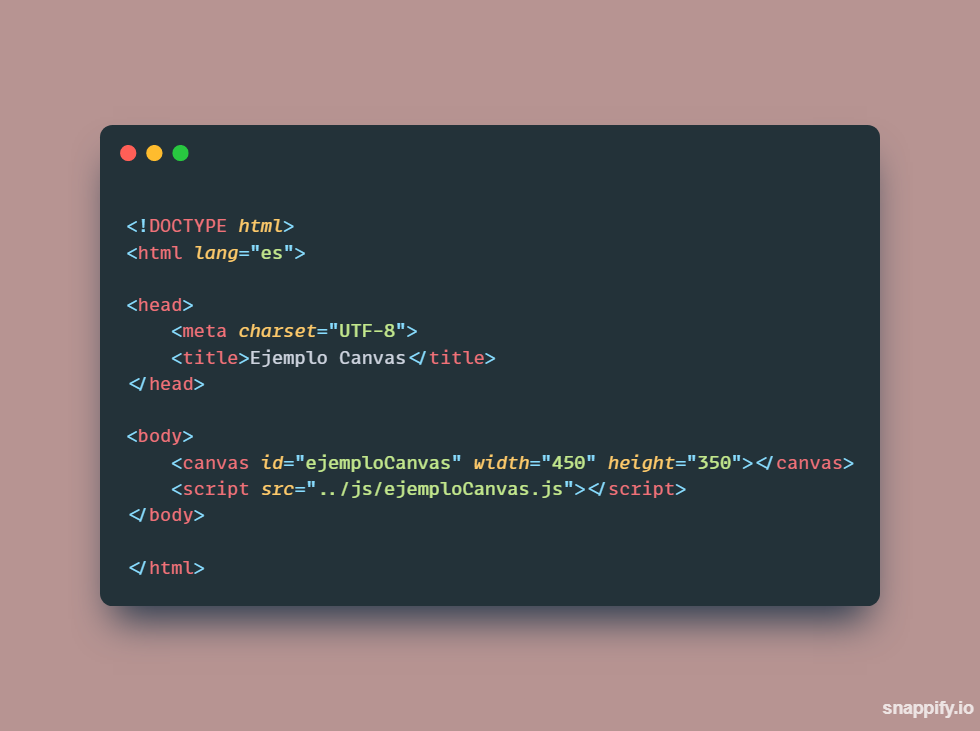

¿Qué es la etiqueta Canvas?
Canvas es un elemento de HTML 5 que permite dibujar gráficos, manipular imágenes y realizar animaciones en una página web de forma dinámica. Es decir, el gráfico se crea en el momento en que se carga la página. El gráfico se define mediante programación, usualmente Javascript. Una vez creado el gráfico se pueden programar acciones para que el usuario interactue con él, por ejemplo, haciendo clic para arrancar una animación o arrastrando un elemento del gráfico.
Aunque el elemento Canvas se crea con la etiqueta "canvas" al hablar de Canvas en sentido amplio nos referimos a toda la API que incluye un conjunto de funciones para dibujar, líneas, rectángulos, círculos, etc. así como para rotar, escalar, transformar elementos gráficos, y otras funciones de variado uso.
De hecho podemos cargar una imagen fotográfica en el Canvas y manipular sus pixeles uno a uno.
Ejemplo de cómo utilizar la etiqueta Canvas
Principales funcionalidades:
Canvas permite dibujar gráficas para representar datos, aunque también se puede realizar con SVG que usa gráficos vectoriales. Además permite realizar gráficas de ecuaciones o funciones en 2D o en 3D
Ejemplos de gráficas en canvas
Canvas también puede servir en el ámbito educativo debido a que se pueden realizar simulaciones físicas del comportamiento de fluidos, sistemas gravitacionales, etc
Ejemplos de simulaciones físicas y librerías usando canvas
Con canvas también se pueden generar imágenes, como texturas basadas en un algoritmo (texturas procedurales), además de poder realizar memes
Ejemplos de canvas para arte
Con canvas se pueden crear juegos elaborados dentro de páginas web, sin embargo estos juegos tienen la característica que solo pueden ser en 2D